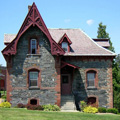

|  |
St. Peter's
Built in 1865
Residence for administrative offices |
Built circa 1865, St. Peter's originally housed the Rosenlund Estate's gardener and his family. The Marist Brothers purchased the estate in 1908 and until 1969, St. Peter's served as a residence for the Marist Brothers. Currently it houses administrative offices. It is named St. Peter's because the Brothers who lived there from 1909 until 1936 taught in St. Peter's school in Poughkeepsie.
Later, as the number of Brothers attached to the Scholasticate (the post High School) grew, St. Peter's was used to house some of the faculty. An addition was put on the front of the building toward the road passing in front of it. This addition was used as an office for Brother Nilus Donnelly, who was constructing new buildings on the property. Another addition was built on the side of St. Peter's facing Route 9. This part of the building housed faculty of Marist College as well as the printer Brother Tarcisius and Gardeners Brother Abelus and Brother Sanctus. It also housed the print shop, which was used to print documents for the Marist Brothers Province as well as the College. These additions were demolished in 1969, when the print shop was moved to the gym and the faculty was moved to Benoit House and the facade of the original building was restored to its former design.
St. Peter's currently houses the staff of the Upward Bound program. Founded in the spring of 1965, Marist College's program is among the longest established in the country. It has helped motivate and academically prepare hundreds of disadvantaged high school students from the Hudson Valley to pursue a college education. Upward Bound is an outstanding example of Marist's longstanding commitment to serve the community beyond the campus.